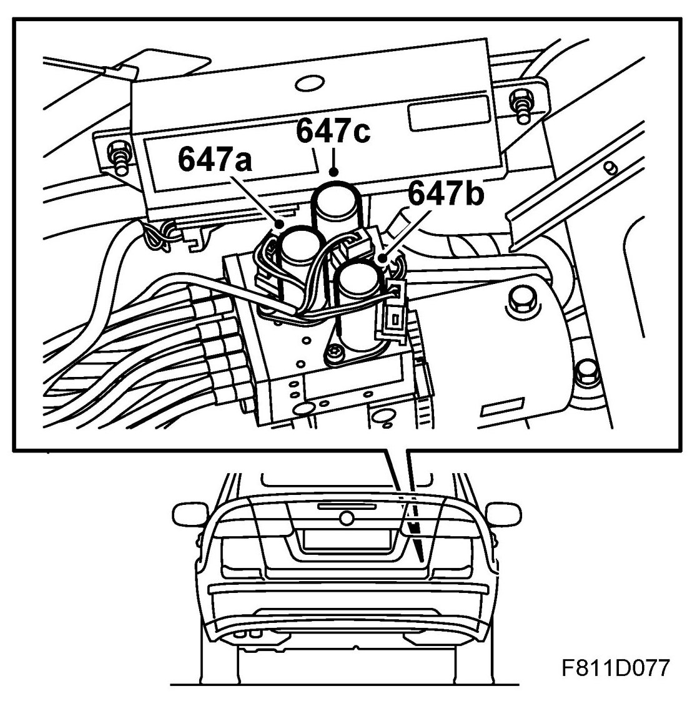
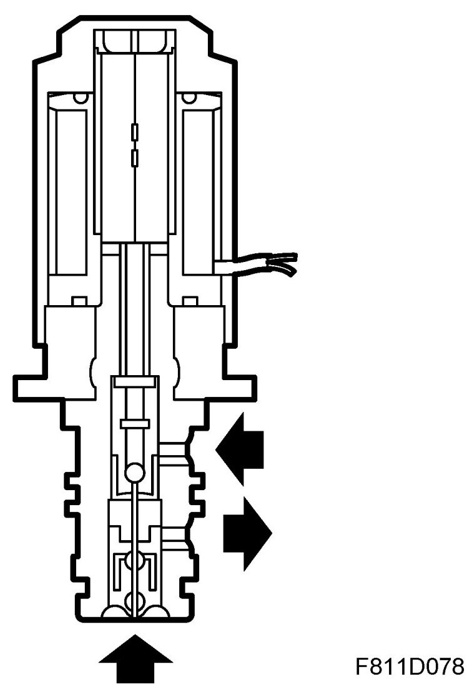
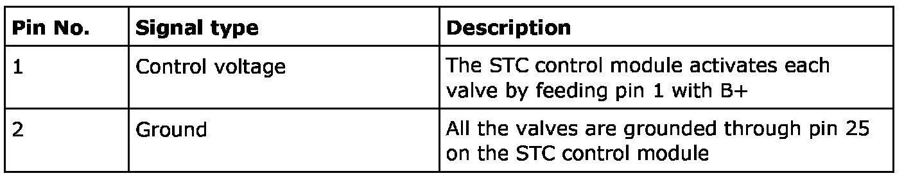
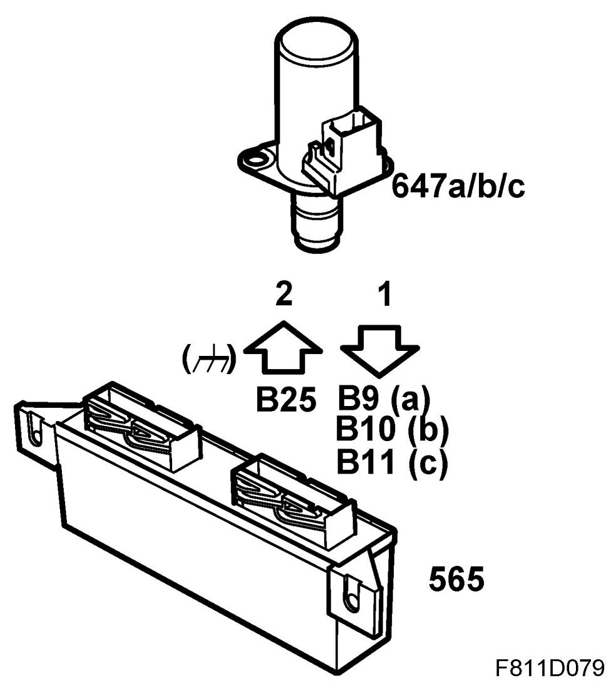
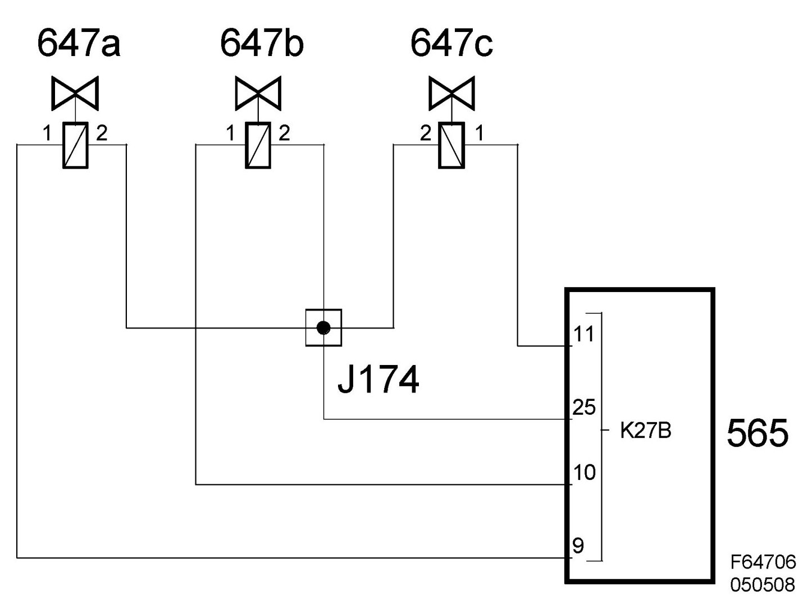

Solenoid Valve 1, 2, 3, Soft Top (647a, b, c)
Solenoid Valve 1, 2, 3, Soft Top (647a, B, C)
Location
Solenoid valve 1, soft top (647a)
Solenoid valve 2, soft top (647b)
Solenoid valve 3, soft top (647c)

Main task
The valves control the oil flow to the hydraulic cylinders.
Type

Electrically operated solenoid valve.
Technical data
Connection


The valve is grounded on pin 2 and is activated by the STC control module putting B+ on pin 1.
Every valve has three connections.
- Oil pump output pressure
- Oil pressure to the hydraulic cylinder
- Oil return to the reservoir
The valves have two positions: "Active" and "Inactive".
When a valve is active the pump output is connected to the cylinder . When a valve is inactive the pump output is connected to the return line to the reservoir.
Diagram
